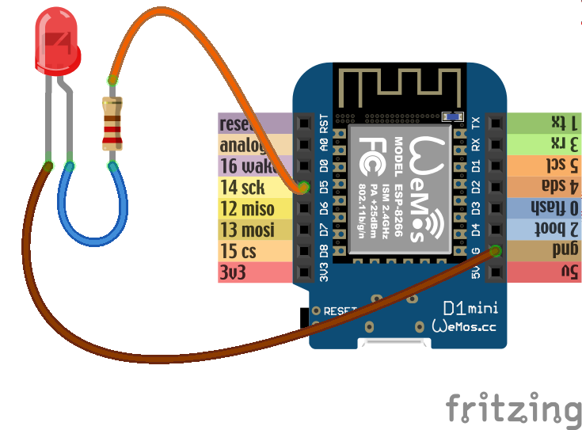
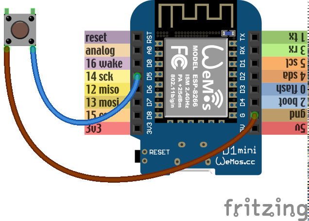

Basics¶
Blink¶
The traditional first program for hobby electronics is a blinking light. We will try to build that.
The boards you have actually have a light built-in, so we can use that. There
is a LED (light-emitting diode) near the antenna (the golden zig-zag). The plus
side of that LED is connected to the 3v3 pins internally, and the minus
side is connected to gpio2. So we should be able to make that LED shine
with our program by making gpio2 behave like the gnd pins. We need to
“bring the gpio2 low”, or in other words, make it connected to gnd.
Let’s try that:
from machine import Pin
led = Pin(2, Pin.OUT)
led(0)
The first line “imports” the “Pin” function from the “machine” module. In Python, to use any libraries, you first have to import them. The “machine” module contains most of the hardware-specific functions in Micropython.
Once we have the “Pin” function imported, we use it to create a pin object,
with the first parameter telling it to use gpio2, and the second parameter
telling it to switch it into output mode. Once created, the pin is assigned to
the variable we called “led”.
Finally, we bring the pin low, by calling the “led” variable with value 0. At this point the LED should start shining. In fact, it may have started shining a line earlier, because once we switched the pin into output mode, its default state is “low”.
Now, how to make the LED stop shining? There are two ways. We could switch it back into “input” mode, where the pin is not connected to anything. Or we could bring it “high”. If we do that, both ends of the LED will be connected to “plus”, and the current won’t flow. We do that with:
led(1)
Now, how can we make the LED blink 10 times? We could of course type led(0)
and led(1) ten times quickly, but that’s a lot of work and we have
computers to do that for us. We can repeat a command or a set of commands using
the “for” loop:
for i in range(10):
led(1)
led(0)
Note, that when you are typing this, it will look more like:
>>> for i in range(10):
... led(1)
... led(0)
...
...
>>>
That’s because the console automatically understands that when you indent a
line, you mean it to be a block of code inside the “for” loop. You have to
un-indent the last line (by removing the spaces with backspace) to finish this
command. You can avoid that by using “paste mode” – press ctrl+E, paste
your code, and then press ctrl+D to have it executed.
What happened? Nothing interesting, the LED just shines like it did. That’s because the program blinked that LED as fast as it could – so fast, that we didn’t even see it. We need to make it wait a little before the blinks, and for that we are going to use the “time” module. First we need to import it:
import time
And then we will repeat our program, but with the waiting included:
for i in range(10):
led(1)
time.sleep(0.5)
led(0)
time.sleep(0.5)
Now the LED should turn on and off every half second.
External Components¶
Now let’s try the same, but not with the build-in LED – let’s connect an external LED and try to use that. The connection should look like this:
{kind=link}
Note how one leg of the LED is a little bit longer, and the other had a
flattening on the plastic of the LED next to it. The long leg should go to the
plus, and the short one to the minus. We are connecting the LED in opposite way
than the internal one is connected – between the pin and gnd. That means
that it will shine when the pin is high, and be dark when it’s low.
Also note how we added a resistor in there. That is necessary to limit the amount of current that is going to flow through the LED, and with it, its brightness. Without the resistor, the LED would shine very bright for a short moment, until either it, or the board, would overheat and break. We don’t want that.
Now, let’s try the code:
from machine import Pin
import time
led = Pin(14, Pin.OUT)
for i in range(10):
led(1)
time.sleep_ms(500)
led(0)
time.sleep_ms(500)
Again, you should see the LED blink 10 times, half a second for each blink.
This time we used time.sleep_ms() instead of time.sleep() – it does
the same thing, but takes the number of milliseconds instead od seconds as the
parameter, so we don’t have to use fractions.
Pulse Width Modulation¶
Wouldn’t it be neat if instead of blinking, the LED slowly became brighter and then fade out again? Can we do this somehow?
The brightness of the LED depends on the voltage being supplied to it. Unfortunately, our GPIO pins only have a simple switch functionality – we can turn them on or off, but we can’t fluently change the voltage (there are pins that could do that, called DAC, for “digital to analog converter”, but our board doesn’t have those). But there is another way. Remember when we first tried to blink the LED without any delay, and it happened too fast to see?
Turns out we can blink the LED very fast, and by varying the time it is on and off change how bright it seems to be to the human eye. The longer it is on and the shorter it is off, the brighter it will seem.
Now, we could do that with a simple loop and some very small delays, but it would keep our board busy and prevent it from doing anything else, and also wouldn’t be very accurate or terribly fast. But the ESP8266 has special hardware dedicated just for blinking, and we can use that! This hardware is called PWM (for Pulse Width Modulation), and you can use it like this:
from machine import Pin, PWM
import time
pwm = PWM(Pin(2))
pwm.duty(896)
time.sleep(1)
pwm.duty(512)
time.sleep(1)
pwm.duty(0)
If you run this, you should see the blue led on gpio2 change brightness.
The possible range is from 1023 (100% duty cycle, the LED is off) to 0 (0%
duty cycle, the LED is on full brightness). Why is 0 full brightness? Remember,
that the LED on the gpio2 is reversed – it shines when the pin is off,
and the duty cycle tells how much the pin is on.
You can also change the frequency of the blinking. Try this:
pwm.freq(1)
That should blink the LED with frequency of 1Hz, so once per second – we are basically back to our initial program, except the LED blinks “in the background” controlled by dedicated hardware, while your program can do other things!
Buttons¶
We don’t have a button in our kit, but we can simulate one by just using two wires, one with a male plug, and one with female. Connect them like so:
{kind=link}
Now we will write some code that will switch the LED on and off each time the wires are put together:
from machine import Pin
led = Pin(2, Pin.OUT)
button = Pin(14, Pin.IN, Pin.PULL_UP)
while True:
if not button():
led(not led())
while not button():
pass
We have used Pin.IN because we want to use gpio14 as an input pin, on
which we will read the voltage. We also added Pin.PULL_UP – that means
that there is a special internal resistor enabled between that pin and the
3V3 pins. The effect of this is that when the pin is not connected to
anything (we say it’s “floating”), it will return 1. If we didn’t do that, it
would return random values depending on its environment. Of course when you
connect the pin to GND, it will return 0.
However, when you try this example, you will see that it doesn’t work reliably. The LED will blink, and sometimes stay off, sometimes switch on again, randomly. Why is that?
That’s because your hands are shaking. A mechanical switch has a spring inside that would shake and vibrate too. That means that each time you touch the wires (or close the switch), there are in reality multiple signals sent, not just one. This is called “bouncing”, because the signal bounces several times.
To fix this issue, we will do something that is called “de-bouncing”. There are several ways to do it, but the easiest is to just wait some time for the signal to stabilize:
import time
from machine import Pin
led = Pin(2, Pin.OUT)
button = Pin(14, Pin.IN, Pin.PULL_UP)
while True:
if not button.value():
led(not led())
time.sleep_ms(300)
while not button():
pass
Here we wait 3/10 of a second – too fast for a human to notice, but enough for the signal to stabilize. The exact time for this is usually determined experimentally, or by measuring the signal from the switch and analyzing it.
Network¶
The ESP8266 has wireless networking support. It can act as a WiFi access point to which you can connect, and it can also connect to the Internet.
To configure it as an access point, run code like this (use your own name and password):
import network
ap = network.WLAN(network.AP_IF)
ap.active(True)
ap.config(essid="network-name", authmode=network.AUTH_WPA_WPA2_PSK, password="abcdabcdabcd")
To scan for available networks (and also get additional information about their signal strength and details), use:
import network
sta = network.WLAN(network.STA_IF)
sta.active(True)
print(sta.scan())
To connect to an existing network, use:
import network
sta = network.WLAN(network.STA_IF)
sta.active(True)
sta.connect("network-name", "password")
Once the board connects to a network, it will remember it and reconnect every time. To get details about connection, use:
sta.ifconfig()
sta.status()
sta.isconnected()
WebREPL¶
The command console in which you are typing all the code is called “REPL” – an acronym of “read-evaluate-print-loop”. It works over a serial connection over USB. However, once you have your board connected to network, you can use the command console in your browser, over network. That is called WebREPL.
First, you will need to download the web page for the WebREPL to your computer.
Get the file from https://github.com/micropython/webrepl/archive/master.zip and
unpack it somewhere on your computer, then click on the webrepl.html file
to open it in the browser.
In order to connect to your board, you have to know its address. If the board works in access point mode, it uses the default address. If it’s connected to WiFi, you can check it with this code:
import network
sta = network.WLAN(network.STA_IF)
print(sta.ifconfig())
You will see something like XXX.XXX.XXX.XXX – that’s the IP address. Enter
it in the WebREPL’s address box at the top like this
ws://XXX.XXX.XXX.XXX:8266/.
To connect to your board, you first have to start the server on it. You do it with this code:
import webrepl
webrepl.start()
Now you can go back to the browser and click “connect”. On the first connection, you will be asked to setup a password – later you will use that password to connect to your board.
Filesystem¶
Writing in the console is all fine for experimenting, but when you actually build something, you want the code to stay on the board, so that you don’t have to connect to it and type the code every time. For that purpose, there is a file storage on your board, where you can put your code and store data.
You can see the list of files in that storage with this code:
import os
print(os.listdir())
You should see something like ['boot.py'] – that’s a list with just one
file name in it. boot.py and later main.py are two special files that
are executed when the board starts. boot.py is for configuration, and you
can put your own code in main.py.
You can create, write to and read from files like you would with normal Python:
with open("myfile.txt", "w") as f:
f.write("Hello world!")
print(os.listdir())
with open("myfile.txt", "r") as f:
print(f.read())
Please note that since the board doesn’t have much memory, you can put large files on it.
Uploading Files¶
You can use the WebREPL to upload files to the board from your computer. To do that, you need to open a terminal in the directory where you unpacked the WebREPL files, and run the command:
python webrepl_cli.py yourfile.xxx XXX.XXX.XXX.XXX:
Where yourfile.xxx is the file you want to send, and XXX.XXX.XXX.XXX is
the address of your board.
Note
You have to have Python installed on your computer for this to work.
This requires you to setup a network connection on your board first. However, you can also upload files to your board using the same serial connection that you use for the interactive console. You just need to install a small utility program:
pip install adafruit-ampy
And then you can use it to copy files to your board:
ampy --port=/dev/ttyUSB0 put yourfile.xxx
Warning
The serial connection can be only used by a single program at a time. Make sure that your console is discobbected while you use ampy, otherwise you may get a cryptic error about it not having the access rights.
HTTP Requests¶
Once you are connected to network, you can talk to servers and interact with web services. The easiest way is to just do a HTTP request – what your web browser does to get the content of web pages:
import urequests
r = urequests.get("http://duckduckgo.com/?q=micropython&format=json").json()
print(r)
print(r['AbstractText'])
You can use that to get information from websites, such as weather forecasts:
import json
import urequests
r = urequests.get("http://api.openweathermap.org/data/2.5/weather?q=Zurich&appid=XXX").json()
print(r["weather"][0]["description"])
print(r["main"]["temp"] - 273.15)
It’s also possible to make more advanced requests, adding special headers to
them, changing the HTTP method and so on. However, keep in mind that our board
has very little memory for storing the answer, and you can easily get a
MemoryError.